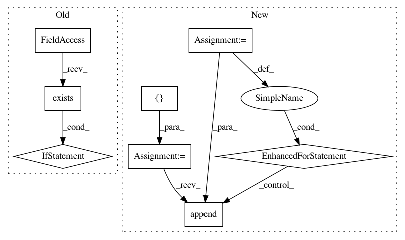

1f65deb60665a460edf5e9238a70a2c597b3a12c,tensorflow_datasets/core/load.py,,find_builder_dir,#,332
Before Change
return None
// Backward compatibility, in order to be a valid ReadOnlyBuilder, the folder
// has to contain the feature configuration.
if not tf.io.gfile.exists(feature_lib.make_config_path(builder_dir)):
return None
return builder_dir
def _get_default_config_name(name: str) -> Optional[str]:
After Change
path: The dataset path found, or None if the dataset isn"t found.
// Search the dataset across all registered data_dirs
all_builder_dirs = []
for current_data_dir in constants.list_data_dirs(given_data_dir=data_dir):
builder_dir = _find_builder_dir_single_dir(
name, data_dir=current_data_dir
)
if builder_dir:
all_builder_dirs.append(builder_dir)
if not all_builder_dirs:
return None
elif len(all_builder_dirs) != 1:
// Rather than raising error every time, we could potentially be smarter
In pattern: SUPERPATTERN
Frequency: 3
Non-data size: 8
Instances
Project Name: tensorflow/datasets
Commit Name: 1f65deb60665a460edf5e9238a70a2c597b3a12c
Time: 2020-09-24
Author: epot@google.com
File Name: tensorflow_datasets/core/load.py
Class Name:
Method Name: find_builder_dir
Project Name: sony/nnabla
Commit Name: f59fb87d9613da132096e85b60cf6c0a8efc1cf6
Time: 2018-09-24
Author: Yukio.Oobuchi@sony.com
File Name: python/src/nnabla/utils/data_source_implements.py
Class Name: CacheDataSource
Method Name: __init__
Project Name: cesium-ml/cesium
Commit Name: 820de79517aaed577f9af9131f5ec87cd432f04a
Time: 2015-02-06
Author: a.crellinquick@gmail.com
File Name: mltsp/tests/test_custom_feats.py
Class Name:
Method Name: teardown